Case study · un'iniziativa Green Energy Campus
GREEN DAY ITALIA
Un progetto che ha favorito la cultura dell'efficienza, del comfort, dell'indipendenza energetica e delle nuove forme del lavoro, in dodici città italiane.
000 — Le origini
Da UDS a Green Day
Green Day non nasce da solo. È l'ultimo passaggio di un percorso partito da UDS, lo studio di progettazione di Andrea Poletti, e passato per GEC — Green Energy Campus. Tre nomi spesso confusi tra loro: ecco come si collegano.
UDS — Unoaventi Design Studio
Lo studio di progettazione di Andrea Poletti: architettura effimera, con un'attenzione alla sostenibilità rara per l'epoca. Nasce prima di ogni altro progetto di questa pagina, e continua a operare ancora oggi.
Da UDS nasce GEC — Green Energy Campus
UDS inizia a collaborare con le prime aziende che installavano impianti residenziali per la produzione e l'efficienza energetica degli edifici. Per formare il personale tecnico che allora non esisteva, Andrea Poletti fonda GEC, a Noventa di Piave.
Da GEC nasce Green Day
Trasferitosi a Modena, GEC dà vita a Green Day: il tour itinerante nelle città italiane raccontato in questa pagina, dedicato a formazione e reclutamento.
« Parleremo del settore che oggi è il più promettente, al fine di assicurare un reddito e un futuro a tutti coloro che credono sia possibile cambiare le cose. »
— Dr. Andrea Poletti, dalla lettera di benvenuto ai candidati del Green Day, 2013
Quello che segue, in questa pagina, è il racconto di quel tour.
001 — Il progetto
Perché Green Day
Green Day Italia è stato un ciclo itinerante di incontri gratuiti, ideato e curato da Andrea Poletti nell'ambito di GEC — Green Energy Campus. Tappa dopo tappa, ha portato nelle principali città italiane una giornata di confronto su efficienza energetica, comfort abitativo, indipendenza energetica e nuove forme del lavoro, rivolta a professionisti, aziende e cittadini.
« Favorire la cultura dell'efficienza, del comfort, dell'indipendenza energetica e delle nuove forme del lavoro. »
città italiane attraversate dal tour, da nord a sud
l'ingresso era libero per tutti i partecipanti
il progetto nasce nell'ambito di Green Energy Campus
dei candidati superava il colloquio di selezione — dati della prima tappa del tour, autunno 2013
002 — Il contesto
In anticipo di quasi un decennio
Tra il 2012 e il 2015 — quando efficienza energetica e transizione ecologica non erano ancora al centro dell'agenda pubblica — Green Day Italia portava già questi temi in dodici città, anni prima che diventassero priorità nazionali ed europee.
Il mercato dell'energia esplode, poi matura
Dopo il disastro di Fukushima, in Italia si installano 17 GW di fotovoltaico — come costruire ex novo 20 centrali nucleari — grazie al conto energia. Il mercato assume migliaia di venditori senza una formazione strutturata. Quando l'incentivo viene abolito, a giugno 2013, non basta più vendere un impianto: serve un nuovo profilo, il consulente per l'efficienza. È lo scenario in cui matura la proposta di GEC.
Green Day Italia
Il tour itinerante GEC su efficienza energetica, comfort, indipendenza energetica e nuove forme del lavoro, in dodici città italiane.
Accordo di Parigi
Il primo accordo globale sul clima, sottoscritto alla COP21, ancora oggi punto di riferimento delle politiche climatiche internazionali.
Fridays for Future
Dallo sciopero scolastico di Greta Thunberg alla prima mobilitazione globale per il clima, con milioni di persone in 125 paesi.
Green Deal europeo
La Commissione europea presenta il piano per rendere l'Europa il primo continente a impatto climatico zero entro il 2050.
Superbonus 110%
L'Italia introduce, con il Decreto Rilancio, il primo grande incentivo di massa per l'efficienza energetica degli edifici.
PNRR
Quasi 70 miliardi di euro destinati in Italia alla rivoluzione verde e alla transizione ecologica.
Un tema che oggi è ovunque. Allora, a Green Day, era ancora un'eccezione.
003 — Le tappe
Un viaggio da nord a sud
Da Trento a Catania, Green Day ha attraversato l'Italia con un formato semplice: una sala, una giornata, un tema. Le iscrizioni alle singole tappe erano gestite attraverso moduli dedicati per ogni città; il progetto si è oggi concluso e le iscrizioni non sono più attive.
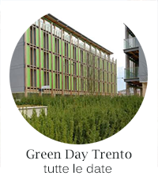
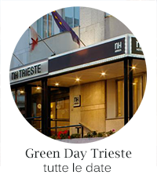
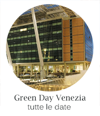
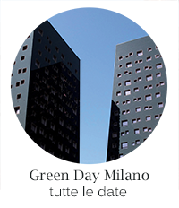
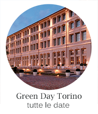
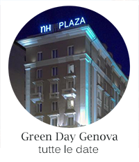
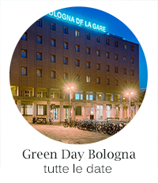
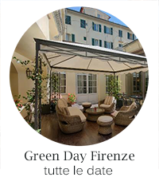
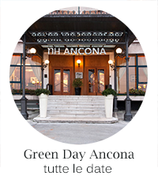
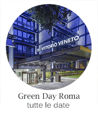
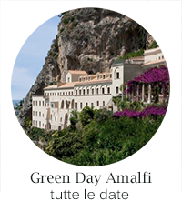
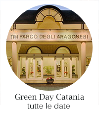
004 — Dietro le quinte
Sale piene, taccuini aperti
Alcuni scatti dagli incontri: relatori, platee attente e flip chart pieni di appunti — il linguaggio semplice e diretto che ha accompagnato ogni tappa del tour.
005 — Una storia dal tour
NH Hotels e il TRI Award
Tra le storie raccontate durante Green Day, una delle più significative riguarda NH Hoteles, sede ospitante di diverse tappe del tour — tra cui Bologna, Firenze e Ancona nel 2013, con la collaborazione poi estesa al Green Tour 2014 su altre strutture del gruppo — e prima catena a ricevere il TRI Award, il riconoscimento assegnato dal CETRI — Circolo europeo per la Terza Rivoluzione Industriale. Il premio è stato consegnato all'amministratore delegato di NH Hoteles Italia, José María Basterrechea, dall'economista statunitense Jeremy Rifkin, tra i maggiori esperti mondiali di sostenibilità ambientale, in occasione della presentazione del suo libro La Terza Rivoluzione Industriale.
Tra le misure premiate: riciclo dei rifiuti, materiali biologici, sensori di presenza nelle camere per ridurre gli sprechi di calore, ascensori a consumo ottimizzato e il Sustainable Club, la rete che riunisce 40 fornitori NH nel rispetto di standard sostenibili.
Tra i progetti annunciati: il primo hotel al mondo a emissioni zero e nuove colonnine di ricarica per veicoli elettrici, già attive in 20 dei 54 hotel NH in Italia.
Fonte: comunicato NH Hotels in occasione del TRI Award, CETRI.
2007–2010
006 — Quello che resta
Un affresco, non un archivio completo
Nei traslochi di uffici e sedi, negli anni, un corriere ha smarrito per errore gli scatoloni con i resoconti completi dell'intero tour: centinaia di tappe, mai più ritrovate. Quello che segue non è un riepilogo del percorso 2012–2015, ma l'unico frammento sopravvissuto per intero — una tappa reale, con tutti i suoi numeri.
Green Tour 00/13, la prima tappa documentata: quattro città in otto giorni, tra il 4 e l'11 settembre 2013. Prima Torino (Hotel Diplomatic) e Bologna (Hotel Mercure), poi Roma (Hotel Diana) e Ancona (NH Hotel) — lo stesso formato ripetuto identico, città dopo città, per tre anni.
Delle 34 persone che hanno partecipato, 22 sono risultate idonee a proseguire verso la Green Academy. Il costo complessivo delle quattro giornate — sale, pernottamenti, cene, viaggi — è stato di 1.796,65 euro.
Da un frammento così si può intuire il resto: lo stesso meccanismo, ripetuto per dodici città e tre anni, di cui oggi restano solo pezzi sparsi.
4–11 sett. 2013
della tappa
007 — Oggi
Un progetto concluso.
Una testimonianza che resta.
Green Day Italia ha chiuso il proprio percorso, ma questa pagina ne raccoglie e restaura i contenuti originali come testimonianza del lavoro svolto in questi anni. Per domande sul progetto, o per una collaborazione, scrivimi.
andrea.poletti@unoaventi.it